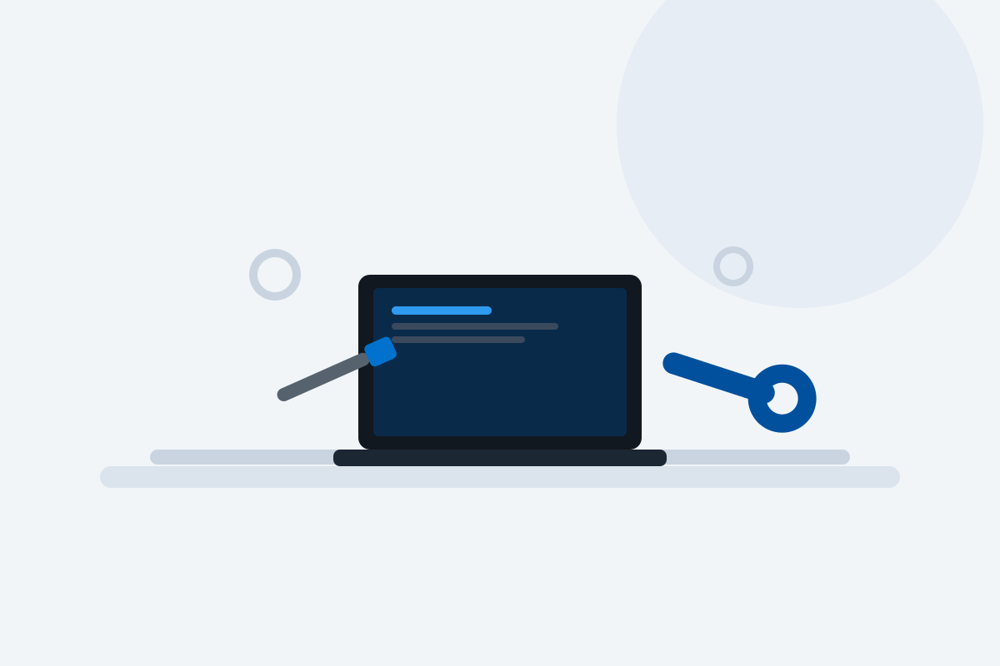

Especialización exclusiva en Medion
Trabajamos únicamente con ordenadores de la marca Medion, lo que nos permite conocer bien sus averías más habituales y sus componentes.
Diagnosticamos y reparamos ordenadores Medion con problemas de encendido, pantalla, batería, lentitud o conexión Wi-Fi. Portátiles, sobremesa, all-in-one y equipos gaming Erazer. Presupuesto claro antes de intervenir y garantía sobre cada reparación.
Servicio técnico independiente. No somos servicio técnico oficial Medion y no gestionamos equipos cubiertos por la garantía del fabricante.
Trabajamos únicamente con ordenadores de la marca Medion, lo que nos permite conocer bien sus averías más habituales y sus componentes.
Revisamos tu equipo sin coste y sin compromiso antes de proponerte ninguna reparación.
Las intervenciones realizadas cuentan con garantía según las condiciones del servicio.
Solicita la recogida de tu ordenador Medion sin necesidad de desplazarte.

Diagnosticamos y reparamos ordenadores Medion con averías electrónicas, mecánicas o de software: portátiles Akoya, sobremesa, all-in-one y equipos gaming Erazer. Revisamos el equipo, identificamos el origen del problema y te informamos del presupuesto antes de intervenir.
Estas son algunas de las incidencias que revisamos con más frecuencia en equipos Medion.
El equipo no enciende, se apaga solo o presenta fallos en la fuente de alimentación o cargador.
Pantalla rota, con líneas, sin imagen o con fallos de retroiluminación en portátiles y all-in-one.
Pérdida de autonomía, apagados repentinos o batería degradada que ya no mantiene la carga.
Lentitud general, virus, errores de Windows o necesidad de formateo y reinstalación.
Ventiladores ruidosos, apagados por temperatura o necesidad de cambio de pasta térmica.
Problemas de conexión, pérdida de red o errores en el adaptador Wi-Fi.
Antes de reparar tu ordenador Medion realizamos un diagnóstico técnico totalmente gratuito y sin compromiso para localizar con precisión la avería.
Solo con el diagnóstico realizado podemos ofrecerte un presupuesto ajustado a la avería real de tu ordenador Medion. Tú decides si sigues adelante con la reparación, sin ningún coste por el diagnóstico.
Cuéntanos el modelo de tu ordenador Medion y la avería que presenta.
Trae el equipo a nuestras instalaciones o solicita la recogida desde Península.
Revisamos el equipo sin coste y localizamos el origen exacto de la avería.
Te informamos del coste antes de realizar cualquier intervención.
Reparamos el equipo, comprobamos su funcionamiento y te lo entregamos.
Si no puedes acercarte a nuestras instalaciones, solicita la recogida de tu ordenador Medion y lo recogemos en cualquier punto de la Península para su diagnóstico gratuito y reparación.
Solicita tu recogida ahoraConsulta las valoraciones publicadas por clientes sobre nuestro servicio y atención.
Visita nuestro canal y descubre contenido técnico sobre reparación de ordenadores.
C. de Joaquín María López, 26, 28015 Madrid. Metro Islas Filipinas, Canal y Moncloa. Aparcamiento público en Calle Blasco de Garay 61.
El formulario se envía directamente mediante la Gmail API configurada en Vercel. No abre ningún gestor de correo y no utiliza servicios externos de terceros.
Diagnóstico gratuito. Te informamos del presupuesto de reparación antes de intervenir.
MedionTech está especializado exclusivamente en el servicio técnico y la reparación de ordenadores de la marca Medion: portátiles, sobremesa, all-in-one y equipos gaming Erazer.
El diagnóstico técnico es totalmente gratuito y sin compromiso. Solo pagas si decides realizar la reparación.
Sí. Puedes utilizar el botón de solicitud de recogida para gestionar el envío desde cualquier punto de Península.
De lunes a viernes de 09:30 a 18:00. Sábados y domingos permanece cerrada la atención presencial. La atención telefónica y por WhatsApp está disponible 24 horas, 365 días.
No. Somos un servicio técnico independiente y no gestionamos reparaciones cubiertas por la garantía oficial del fabricante.
Sí, las reparaciones realizadas cuentan con garantía sobre la intervención según las condiciones del servicio.
Un ordenador Medion que no enciende, va lento o se apaga solo suele tener un origen concreto: un fallo en la fuente de alimentación, una batería degradada o software dañado por virus o mal funcionamiento del sistema. Por eso, antes de sustituir piezas, en MedionTech realizamos un diagnóstico técnico gratuito que permite identificar la causa real de la avería y evitar reparaciones innecesarias.
Otras averías habituales están relacionadas con la pantalla rota o con fallos, el teclado o touchpad dañado, y el sobrecalentamiento por acumulación de polvo o pasta térmica degradada. También ampliamos memoria RAM y sustituimos discos duros por unidades SSD para mejorar el rendimiento de portátiles y equipos de sobremesa Medion.
Un mantenimiento periódico —limpieza interna, actualización de software y revisión de batería— ayuda a prevenir buena parte de las averías más comunes en ordenadores Medion. Si tu equipo presenta cualquiera de estos síntomas, puedes contactar con nuestro servicio técnico en Madrid o solicitar la recogida desde cualquier punto de la Península.